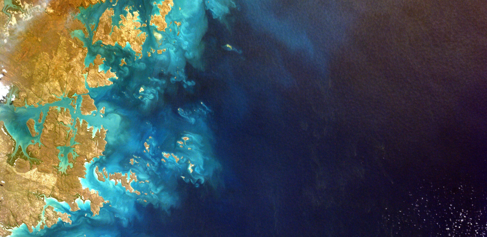
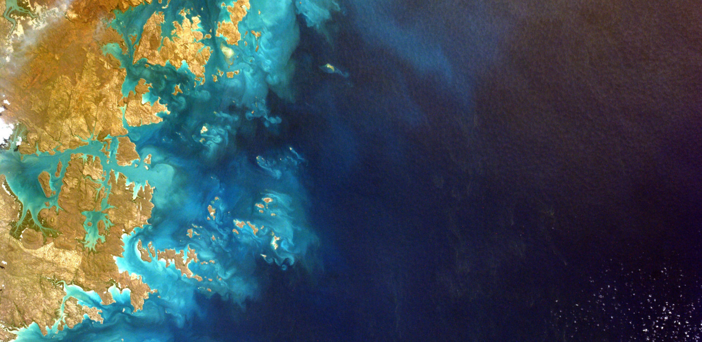

粘性页脚 Demo
这个页面演示了如何创建一个使用 flexbox 的页脚，无论中间的内容部分是否会超出浏览器高度，该页脚始终粘贴在页面的底部。
切换内容我白天是个邮递员，晚上就是个有抱负的演员。这是一个 demo 页面，我住在天朝的帝都，有条叫做二哈的狗。
XYZ装置公司成立于1971年，公司成立以来，我们一直向市民提供高品质的装置。我们位于北京市，有超过2,000名员工，对北京市有着相当大的贡献。
我白天是个邮递员，晚上就是个有抱负的演员。这是一个 demo 页面，我住在天朝的帝都，有条叫做二哈的狗。
XYZ装置公司成立于1971年，公司成立以来，我们一直向市民提供高品质的装置。我们位于北京市，有超过2,000名员工，对北京市有着相当大的贡献。